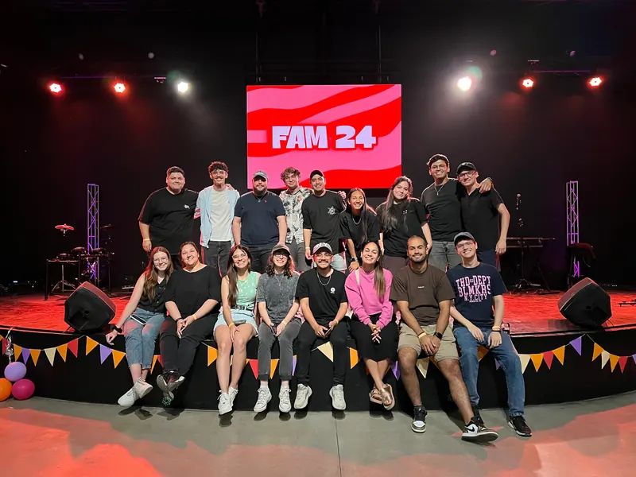
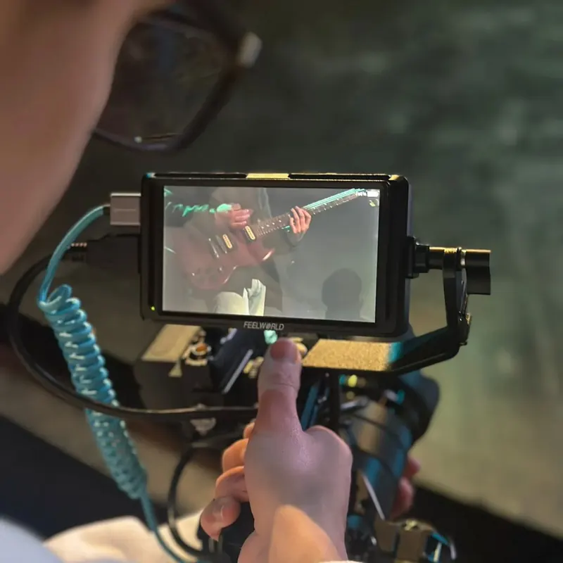

Audiovisual production
I've loved post-production since I was a kid. Today I edit videos and produce motion graphics professionally, and I work with camera, editing and color.

My path
I started editing videos in Camtasia Studio, and over time I found in Adobe Premiere Pro the tool that let my creativity grow. Editing became one of my favorite spaces: I can spend hours polishing details, trying new ideas and pushing myself.
I also found great motivation in camera work, which I developed in academic projects and at my local church, where I'm part of the live-streaming team: camera direction, editing and real-time framing.

Today
At Alpha Efficiency I edit videos and produce motion graphics for the company, including client testimonials and corporate content.
As a freelancer with Tomix Visuals, I've been doing video editing and post-production for clients since 2018.
La Casa del Té
- Year
- 2023
- Course
- Audiovisual Language I, UNLa
- Role
- Editor, camera and set design
- Gear
- Shot on a Samsung A23
Tasks
- Full edit of the short in Adobe Premiere Pro.
- Shooting specific shots.
- Building the set with the team.
Challenge
The lack of lighting. We solved it with bedside lamps and homemade reflective surfaces.
Costuras del Pasado
- Year
- 2025
- Course
- Audiovisual Language II, UNLa
- Role
- Focus puller, camera operator, colorist and screenwriter
- Gear
- iPhone 14 and gimbal
Tasks
- Writing the screenplay and the shooting script.
- Camera floor plans and color palette selection.
- Camera operation and focus pulling during the shoot.
- Color grading in Premiere Pro.
On screen
Short films I worked on, ready to watch right here.
What I'm looking for
My professional goal is to leave a mark on the audiovisual world, especially in film. I'm driven by projects that connect with people through visuals and storytelling.
I want to keep growing in cinematography and post-production, bringing every lesson to new challenges.

Projects


Tools
The ones I use every day in this area.
- Premiere Pro
- After Effects
- Lightroom
- vMix
- OBS Studio
Let's make something that stands out.
Have a website, a product or a campaign in mind? Tell me what you need and let's think it through together. I work remotely, in English or Spanish.
wikipediatomitob@gmail.com